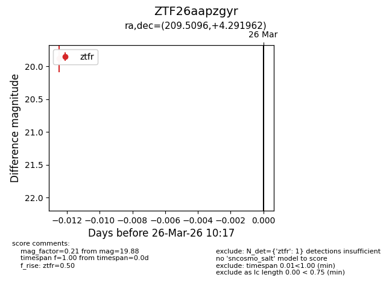
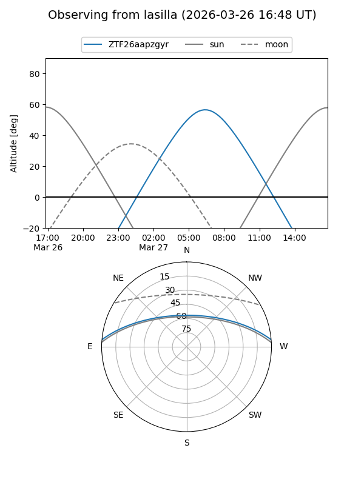
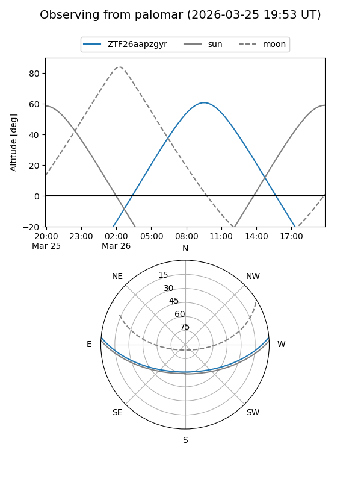

ZTF26aapzgyr
Target ZTF26aapzgyr at 2026-03-26 10:19
Aliases and brokers:
FINK: link
Lasair: link
ALeRCE: link
alt names
ZTF26aapzgyr (ztf,fink_ztf)
Coordinates:
equatorial (ra, dec) = 209.5096,+4.29196
equatorial (HMS+DMS) = 13:58:02.31,+04:17:31.06
galactic (l, b) = (340.6806,+62.17862)
Flags:
Photometry:
last ztfr=19.88
1 ztfr detections
Lightcurve

Visibility


Additional plots